ברוכים הבאים !
ברוכים הבאים לעמק הקסמים בו תכירו את הסודות הכי קסומים והכי אפלים בעולמו הקסום של הארי פוטר וחבריו.
עמוד זה לא סתם נגלה אליכם !
ביחד נשקיף על ההיסטוריה המדהימה של הוגוורטס, בה השתמשו בלחשים האפלים ביותר.
נחקור את היצורים המיוחדים שנמצאים בסביבה, והכי חשוב נציג לכם את צד האופל הקוסמי כנגד הקוסמים הטובים.
אני רוצה לקרוא על :
רשימת הסרטים :
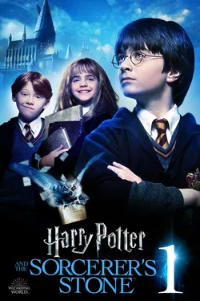 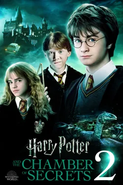 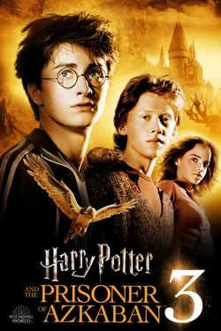 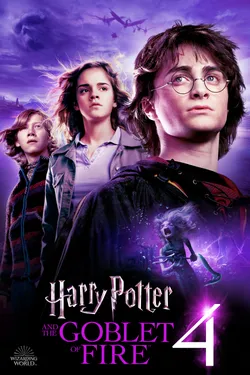 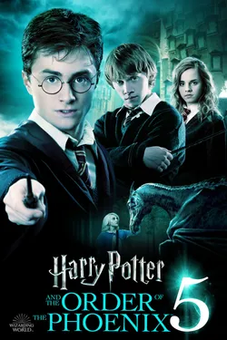 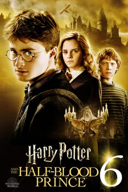 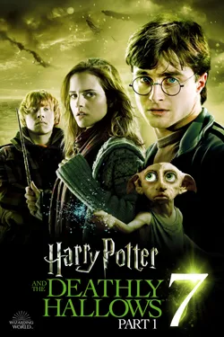 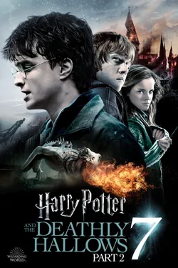ג'יי קיי רואולינג - המלכה של סדרת "הארי פוטר"
ג'יי קיי רואולינג היא סופרת בריטית שזכתה לפרסום רב בעקבות סדרת הספרים "הארי פוטר". רואולינג נולדה ב-1965 באנגליה ובילתה רבע מהחיים בסקוטלנד. לפני שהפכה לסופרת, היא עבדה כמורה וכיועצת משפטית. רעיון "הארי פוטר" נולד בראשה במהלך נסיעה ברכבת בין מנצ'סטר ללונדון. הספר הראשון יצא לאור ב-1997 וכבש את הלבבות של מיליוני קוראים ברחבי העולם. הסדרה התרחבה לשבעה ספרים והפכה לאחת מסדרות הספרים המצליחות ביותר בהיסטוריה. רואולינג זכתה לכינוי "מלכת הקסם" והספרים שלה הועברו לסרטים שהפכו לאחד מסדרות הסרטים המצליחות ביותר בקולנוע. הצלחתה של רואולינג עם "הארי פוטר" הביאה לה הכרה רבה, עושר והשראה למיליוני קוראים ומעריצים ברחבי העולם.
איך הכל התחיל ?

הארי פוטר הוא הילד הכי אומלל ובודד שאתה יכול לדמיין. קרובי משפחתו, בני הזוג דרסלי, שגידלו אותו מאז שהיה תינוק, התרחקו ממנו. הוא נאלץ לגור בארון מתחת למדרגות, נאלץ ללבוש את הבגדים של בן דודו דאדלי, ונאלץ ללכת לבית השכן שלו כששאר בני המשפחה עושים משהו מהנה. עם זאת, עולמו של הארי מתהפך ביום הולדתו ה-11. הארגריד החצי הענק מודיע להארי שהוא באמת קוסם, ובקרוב ילמד בבית הספר הוגוורטס לכישוף וקוסמות. הארי גם מגלה שבעולם הקוסמים הוא גיבור. כשהיה תינוק, לורד וולדמורט הרשע הרג את הוריו ולאחר מכן ניסה להרוג גם את הארי. מה שמדהים את כולם הוא שהארי שרד, ולכאורה השמיד את וולדמורט. ההמשך מלווה בחוויות, קסמים ואתגרים שניצבים בפני הארי וחבריו הטובים. הארי ייקח אותכם לעולם הקסמים, רק כדי שתחזיקו חזק כי החוויה תהיה מדהימה!
הוגוורטס: כשקסם והרפתקה נפגשים

הוגוורטס הוא לא רק בית ספר, הוא נמצא בכל מקום. זהו בית הספר הכי קסום ומרהיב שכל אחד יכול היה לדמיין. מרגע שאתה חוצה את שעריו, אתה נכנס לעולם שאין לו תחרות. פה, הילדים לא רק לומדים קסמים, אלא גם מתרגלים להיות גיבורים. כל חדר וכל פינה פה מלאים במסתורין ובקסם. הוגוורטס הוא יותר מבית ספר פשוט, זה מקום שבו הכל ניתן, והכל אפשרי!
עובדות מעניינות על הסדרה 🤯

- על מנת לאפשר את צילומי הסרט הראשון, בריטניה ביצעה שינוי בחוק תעסוקת הקטינים. ללא השינוי, תלמידים רבים שצולמו בסרט לא יכלו להשתתף בימי הצילום הארוכים.
- כל המכתבים שהארי מקבל מהוגוורטס נכתבו בכתב יד על ידי אנשי צוות. לאחר שהסתבר שחלק מהמכתבים היו כבדים מדי עבור הינשופים שנאלצו לסחוב אותם, הצוות העתיק מחדש את המכתבים על דפים קלים יותר.
- תהליך הליהוק לשלישייה הראשית לא היה פשוט עבור ההפקה, שבחנה אלפי ילדים שחלמו להיות הארי, רון או הרמיוני. בסופו של דבר, רופרט גרינט זכה לגלם את חברו הטוב ביותר של הארי פוטר, כיצד הוא עשה זאת? באמצעות קטע ראפ שהכין במיוחד והלהיב את המלהקים.
- הסרט השני, על אף שהתבסס על הספר הקצר ביותר, הוא הסרט הארוך ביותר בסדרה (161 דקות). הסרט הקצר ביותר (138 דקות) הוא דווקא הסרט החמישי (הארי פוטר ומסדר עוף החול), שהוא דווקא מבוסס על הספר הארוך ביותר בסדרה.
- בסצנת "מועדון הדו-קרב" בסרט השני, כשסנייפ בוחר בדראקו להילחם בהארי, צוות העריכה לא הבחין שבגרסה הסופית ניתן לראות בבירור צלם שמבצע את עבודתו בין עשרות התלמידים.
רשימת הספרים :
 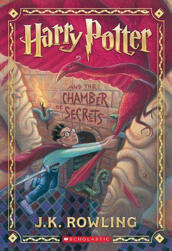
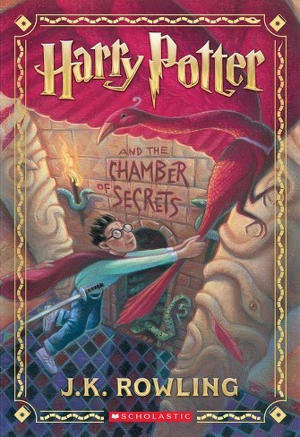
 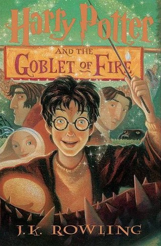
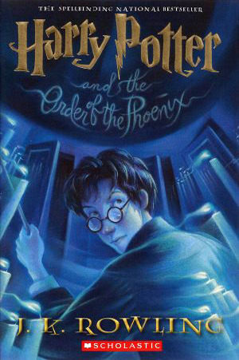
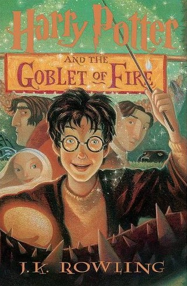
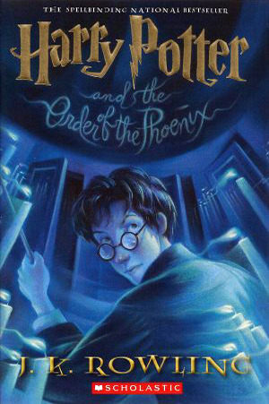